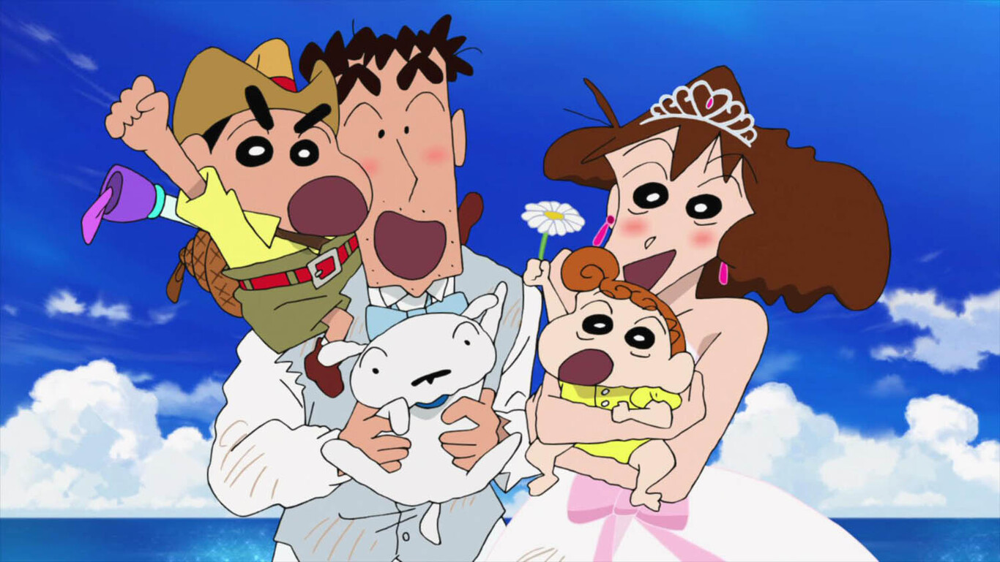

Mis logros
Mi familia
 Esta foto fue muy especial, nos la tomamos tras acabar la última escena de una de nuestras películas.
Ellos también actúan, mi madre es Misae Nohara(cuarentona), mi Hiroshi Nohara(calcetines apestosos), mi hermana Himawari(llorona) y Nevado,
el mejor perro del mundo.
Aunque no lo diga, los quiero muchísimo y no puedo vivir sin ellos, y menos de los boniatos de mamá.
Ultrahéroe
Ultrahéroe...
Desde pequeño he vivido a tu lado, no ha habido capítulo que me perdiera, y si no, lo dejaba
grabando. Siempre le digo a mis padres que algún día seré como tú, y que estaré a tu lado para ayudarte en tus peligrosas
aventuras. Te quiero Ultrahéroe, gracias por todo lo que me has enseñado.
Mis amigos
Boochan, Kasama, Masao y Nene (de izquierda a derecha).
Los conocí en el parvulario, desde entonces
somos inseparables y hemos recorrido millones de aventuras juntos donde hemos aprendido muchas culturas, comida y muchas chicas.
Kasama está enamorado de mí pero no lo quiere admitir, Nene es la mandona del grupo pero sin ella no tendríamos orden, Masao es un cobarde
pero de buen corazón, sorprende cuando menos te lo esperas. Y Bochan, bueno, es muy sabio y le gusta coleccionar rocas, siempre tiene que llevar
pañuelos encima.
Nanako
Aquí, os presento al amor de mi vida, Nanako, aunque ella no lo sepa.
Nos conocimos de mano de nuestro trabajo. Estaba grabando un episodio y una chica nueva iba a entrar como
universitaria para hacer un par de frases, y yo interactuaba con ella. Mi corazón dio un saltó al verla y desde ahí, todo fluyo.
Siempre le invito a venir a casa, me regala muchas chuches y siempre
me da un beso cuando me ve. Tengo planeado pedirle salir cuando tenga 18 años, ella mismo me lo dijo.
YO

Entonces, tras todo esto acerca de mí y mis allegados, ¿llegamos a un acuerdo Ultrahéroe?